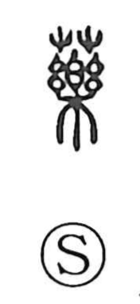

薬

Kun: kusuri | On: yaku
medicine ・ drug ・ to heal
Explanation
薬, formerly 藥, combines 艸, plants, with 樂 as its sound element. Its direct meaning is a plant that treats illness: a medicinal herb. From the herb, the word broadens to medicine generally and to healing by its use.
樂 also preserves an older setting for treatment. It pictures a handled bell, shaken by a ritual healer to drive away the spirits of disease. An early graph for 療, ‘heal,’ combines the sickness element with 樂, recording this bell-ringing treatment. 薬 belongs to the same group of healing words, while its plant element specifies the medicinal substance.
The character can thus name the remedy itself or the action of curing, relieving, and helping someone through treatment.